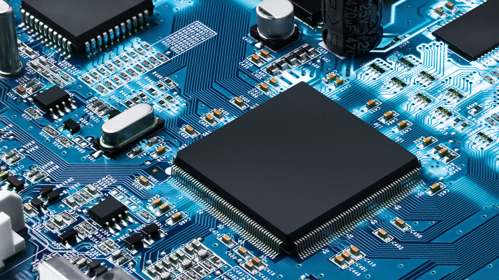

Objective

Improving sustainability of products with cutting-edge technology and modular design, while tackling affordability.
Expanding the semiconductor industry with products that are more efficient, more capable, and faster.
Education
University of Southern CaliforniaMay 2026
- Degree: B.S. in Computer Engineering and Computer Science
Adrian Wilcox High SchoolJune 2022
Experience
Hardware + Business LeadAugust 2018 - May 2022
Wilcox Robotics (Wilcox High School)
- Competed in First Tech Challenge
- Co-Captain of Roblivion (Junior Robotics Team) - August 2019
- Co-Captain of Robopocalypse (Senior Robotics Team) – July 2021
CURVE Fellow ResearcherAugust 2022 - Current
University of Southern California
- Lab: Laboratory for Design of Medical and Analytical Devices (August 2022 - May 2023), Khan Lab (August 2023 - Current)
- Project: Smart health management: A point-of-care diagnostic tool for vitamin-D detection(August 2022 - May 2023), Electrochemical transistors (August 2023 - Current)
Skills
Programming Languages
- C++
- Java
- Python
- JavaScript
- HTML/CSS
Technical
- Microsoft Suite
- Adobe Creative Cloud
- Laser Engraving
- 3D Printing and CAD
Languages